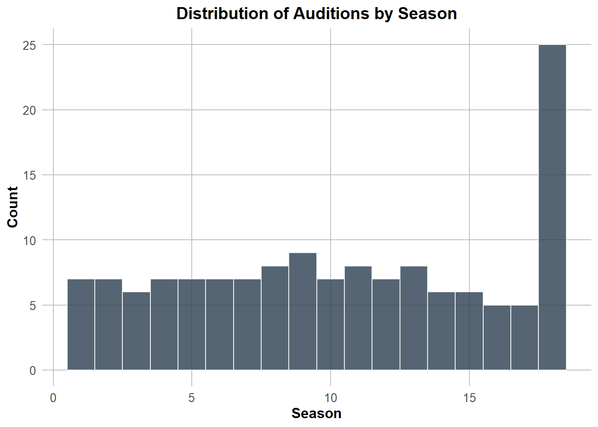
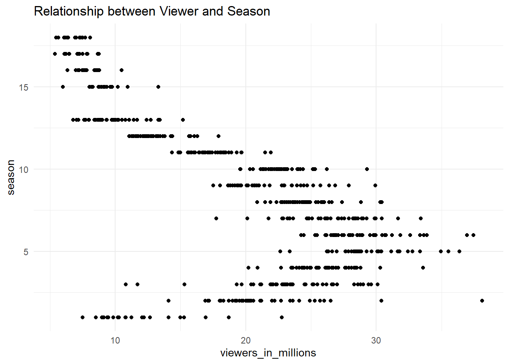

options(repos = c(CRAN = "https://cran.rstudio.com"))Tidy Tuesday Exercise
Placeholder file for the future Tidy Tuesday exercise.
if (!requireNamespace("tidytuesdayR", quietly = TRUE)) {
install.packages("tidytuesdayR")
}
library(tidytuesdayR)Warning: package 'tidytuesdayR' was built under R version 4.3.3install.packages("tidytuesdayR")Warning: package 'tidytuesdayR' is in use and will not be installedtuesdata <- tidytuesdayR::tt_load('2024-07-23')--- Compiling #TidyTuesday Information for 2024-07-23 ------- There are 6 files available ------ Starting Download ---
Downloading file 1 of 6: `auditions.csv`
Downloading file 2 of 6: `eliminations.csv`
Downloading file 3 of 6: `finalists.csv`
Downloading file 4 of 6: `ratings.csv`
Downloading file 5 of 6: `seasons.csv`
Downloading file 6 of 6: `songs.csv`--- Download complete ---PART 1: Load, wrangle and explore the data.
head(tuesdata)$auditions
# A tibble: 142 × 12
season audition_date_start audition_date_end audition_city audition_venue
<dbl> <date> <date> <chr> <chr>
1 1 2002-04-20 2002-04-22 Los Angeles, Cal… Westin Bonave…
2 1 2002-04-23 2002-04-25 Seattle, Washing… Hyatt Regency…
3 1 2002-04-26 2002-04-28 Chicago, Illinois Congress Plaz…
4 1 2002-04-29 2002-05-01 New York City, N… Millenium Hil…
5 1 2002-05-03 2002-05-05 Atlanta, Georgia AmericasMart/…
6 1 2002-05-05 2002-05-07 Dallas, Texas Wyndham Anato…
7 1 2002-05-11 2002-05-11 Miami, Florida Fontainebleau…
8 2 2002-10-21 2002-10-21 Detroit, Michigan Atheneum Suit…
9 2 2002-10-24 2002-10-28 New York, New Yo… Regent Wall S…
10 2 2002-10-27 2002-10-27 Atlanta, Georgia AmericasMart
# ℹ 132 more rows
# ℹ 7 more variables: episodes <chr>, episode_air_date <chr>,
# callback_venue <chr>, callback_date_start <date>, callback_date_end <date>,
# tickets_to_hollywood <dbl>, guest_judge <chr>
$eliminations
# A tibble: 456 × 46
season place gender contestant top_36 top_36_2 top_36_3 top_36_4 top_32
<dbl> <chr> <chr> <chr> <chr> <chr> <chr> <chr> <chr>
1 1 1 Female Kelly Clarkson <NA> <NA> <NA> <NA> <NA>
2 1 2 Male Justin Guarini <NA> <NA> <NA> <NA> <NA>
3 1 3 Female Nikki McKibbin <NA> <NA> <NA> <NA> <NA>
4 1 4 Female Tamyra Gray <NA> <NA> <NA> <NA> <NA>
5 1 5 Male R. J. Helton <NA> <NA> <NA> <NA> <NA>
6 1 6 Female Christina Chris… <NA> <NA> <NA> <NA> <NA>
7 1 7 Female Ryan Starr <NA> <NA> <NA> <NA> <NA>
8 1 8 Male AJ Gil <NA> <NA> <NA> <NA> <NA>
9 1 9–10 Male EJay Day <NA> <NA> <NA> <NA> <NA>
10 1 9–10 Male Jim Verraros <NA> <NA> <NA> <NA> <NA>
# ℹ 446 more rows
# ℹ 37 more variables: top_32_2 <chr>, top_32_3 <chr>, top_32_4 <chr>,
# top_30 <chr>, top_30_2 <chr>, top_30_3 <chr>, top_25 <chr>, top_25_2 <chr>,
# top_25_3 <chr>, top_24 <chr>, top_24_2 <chr>, top_24_3 <chr>, top_20 <chr>,
# top_20_2 <chr>, top_16 <chr>, top_14 <chr>, top_13 <chr>, top_12 <chr>,
# top_11 <chr>, top_11_2 <chr>, wildcard <chr>, comeback <lgl>, top_10 <chr>,
# top_9 <chr>, top_9_2 <chr>, top_8 <chr>, top_8_2 <chr>, top_7 <chr>, …
$finalists
# A tibble: 190 × 6
Contestant Birthday Birthplace Hometown Description Season
<chr> <chr> <chr> <chr> <chr> <dbl>
1 Kelly Clarkson 24-Apr-82 Fort Worth, Texas Burleso… "She perfo… 1
2 Justin Guarini 28-Oct-78 Columbus, Georgia Doylest… "He perfor… 1
3 Nikki McKibbin 28-Sep-78 Grand Prairie, Tex… <NA> "She had p… 1
4 Tamyra Gray 26-Jul-79 Takoma Park, Maryl… Atlanta… "She had a… 1
5 R. J. Helton 17-May-81 Pasadena, Texas Cumming… "J. Helton… 1
6 Christina Christian 21-Jun-81 Brooklyn, New York <NA> ".Christin… 1
7 Ryan Starr 21-Nov-82 Sunland, California <NA> "Her audit… 1
8 AJ Gil 5-Jul-84 San Diego, Califor… Tacoma,… <NA> 1
9 Jim Verraros 8-Feb-83 Chicago, Illinois <NA> "He grew u… 1
10 EJay Day 13-Sep-81 Lawrenceville, Geo… <NA> "He auditi… 1
# ℹ 180 more rows
$ratings
# A tibble: 593 × 17
season show_number episode airdate `18_49_rating_share` viewers_in_millions
<dbl> <dbl> <chr> <chr> <chr> <dbl>
1 1 1 Auditions June 1… 4.8 9.85
2 1 2 Hollywoo… June 1… 5.2 11.2
3 1 3 Top 30: … June 1… 5.2 10.3
4 1 4 Top 30: … June 1… 4.7 9.47
5 1 5 Top 30: … June 2… 4.5 9.08
6 1 6 Top 30: … June 2… 4.2 8.53
7 1 7 Top 30: … July 2… 5.3 10.3
8 1 8 Top 30: … July 3… N/A 7.5
9 1 9 Wildcard… July 1… 4.1 8.97
10 1 10 Top 10 P… July 1… 5.3 10.3
# ℹ 583 more rows
# ℹ 11 more variables: timeslot_et <chr>, dvr_18_49 <chr>,
# dvr_viewers_millions <chr>, total_18_49 <chr>,
# total_viewers_millions <chr>, weekrank <chr>, ref <lgl>, share <chr>,
# nightlyrank <dbl>, rating_share_households <chr>, rating_share <chr>
$seasons
# A tibble: 18 × 10
season winner runner_up original_release original_network hosted_by judges
<dbl> <chr> <chr> <chr> <chr> <chr> <chr>
1 1 Kelly Cl… Justin G… June 11 (2002-0… Fox Ryan Sea… Paula…
2 2 Ruben St… Clay Aik… January 21 (200… Fox Ryan Sea… Paula…
3 3 Fantasia… Diana De… January 19 (200… Fox Ryan Sea… Paula…
4 4 Carrie U… Bo Bice January 18 (200… Fox Ryan Sea… Paula…
5 5 Taylor H… Katharin… January 17 (200… Fox Ryan Sea… Paula…
6 6 Jordin S… Blake Le… January 16 (200… Fox Ryan Sea… Paula…
7 7 David Co… David Ar… January 15 (200… Fox Ryan Sea… Paula…
8 8 Kris All… Adam Lam… January 13 (200… Fox Ryan Sea… Paula…
9 9 Lee DeWy… Crystal … January 12 (201… Fox Ryan Sea… Simon…
10 10 Scotty M… Lauren A… January 19 (201… Fox Ryan Sea… Randy…
11 11 Phillip … Jessica … January 18 (201… Fox Ryan Sea… Randy…
12 12 Candice … Kree Har… January 16 (201… Fox Ryan Sea… Randy…
13 13 Caleb Jo… Jena Ire… January 15 (201… Fox Ryan Sea… Harry…
14 14 Nick Fra… Clark Be… January 7 (2015… Fox Ryan Sea… Harry…
15 15 Trent Ha… La'Porsh… January 6 (2016… Fox Ryan Sea… Harry…
16 16 Maddie P… Caleb Le… March 11 (2018-… ABC Ryan Sea… Katy …
17 17 Laine Ha… Alejandr… March 3 (2019-0… ABC Ryan Sea… Katy …
18 18 Just Sam Arthur G… February 16 (20… ABC Ryan Sea… Katy …
# ℹ 3 more variables: no_of_episodes <dbl>, finals_venue <chr>, mentor <chr>
$songs
# A tibble: 2,429 × 8
season week order contestant song artist song_theme result
<chr> <chr> <dbl> <chr> <chr> <chr> <chr> <chr>
1 Season_01 20020618_top_30_gr… 1 Tamyra Gr… And … Jenni… <NA> Advan…
2 Season_01 20020618_top_30_gr… 2 Jim Verra… When… Doris… <NA> Advan…
3 Season_01 20020618_top_30_gr… 3 Adriel He… I'll… Edwin… <NA> Elimi…
4 Season_01 20020618_top_30_gr… 4 Rodesia E… Dayd… The M… <NA> Elimi…
5 Season_01 20020618_top_30_gr… 5 Natalie B… Crazy Patsy… <NA> Elimi…
6 Season_01 20020618_top_30_gr… 6 Brad Estr… Just… James… <NA> Elimi…
7 Season_01 20020618_top_30_gr… 7 Ryan Starr The … The K… <NA> Advan…
8 Season_01 20020618_top_30_gr… 8 Justinn W… When… Percy… <NA> Elimi…
9 Season_01 20020618_top_30_gr… 9 Kelli Glo… I Wi… Dolly… <NA> Wild …
10 Season_01 20020618_top_30_gr… 10 Christoph… Stil… Brian… <NA> Wild …
# ℹ 2,419 more rowssummary(tuesdata) Length Class Mode
auditions 12 spec_tbl_df list
eliminations 46 spec_tbl_df list
finalists 6 spec_tbl_df list
ratings 17 spec_tbl_df list
seasons 10 spec_tbl_df list
songs 8 spec_tbl_df listChecking for missing values
sapply(tuesdata, function(df) sum(is.na(df))) auditions eliminations finalists ratings seasons songs
418 16763 107 5185 33 1686 Running some summary statisics
sapply(tuesdata, function(df) if(is.data.frame(df)) { summary(df) } else { NULL })$auditions
season audition_date_start audition_date_end audition_city
Min. : 1.00 Min. :2002-04-20 Min. :2002-04-22 Length:142
1st Qu.: 6.00 1st Qu.:2006-08-11 1st Qu.:2006-08-11 Class :character
Median :10.00 Median :2010-09-05 Median :2010-09-05 Mode :character
Mean :10.37 Mean :2011-04-14 Mean :2011-04-14
3rd Qu.:15.00 3rd Qu.:2015-09-05 3rd Qu.:2015-09-05
Max. :18.00 Max. :2019-09-21 Max. :2019-09-21
audition_venue episodes episode_air_date callback_venue
Length:142 Length:142 Length:142 Length:142
Class :character Class :character Class :character Class :character
Mode :character Mode :character Mode :character Mode :character
callback_date_start callback_date_end tickets_to_hollywood
Min. :2002-02-06 Min. :2002-02-06 Min. : 6.0
1st Qu.:2006-10-02 1st Qu.:2006-10-03 1st Qu.: 20.0
Median :2010-11-09 Median :2010-11-10 Median : 29.0
Mean :2011-06-11 Mean :2011-06-12 Mean : 41.8
3rd Qu.:2015-09-13 3rd Qu.:2015-09-14 3rd Qu.: 37.0
Max. :2019-09-21 Max. :2019-09-21 Max. :561.0
NA's :13 NA's :13 NA's :48
guest_judge
Length:142
Class :character
Mode :character
$eliminations
season place gender contestant
Min. : 1.00 Length:456 Length:456 Length:456
1st Qu.: 4.00 Class :character Class :character Class :character
Median : 8.00 Mode :character Mode :character Mode :character
Mean : 8.86
3rd Qu.:13.00
Max. :18.00
top_36 top_36_2 top_36_3 top_36_4
Length:456 Length:456 Length:456 Length:456
Class :character Class :character Class :character Class :character
Mode :character Mode :character Mode :character Mode :character
top_32 top_32_2 top_32_3 top_32_4
Length:456 Length:456 Length:456 Length:456
Class :character Class :character Class :character Class :character
Mode :character Mode :character Mode :character Mode :character
top_30 top_30_2 top_30_3 top_25
Length:456 Length:456 Length:456 Length:456
Class :character Class :character Class :character Class :character
Mode :character Mode :character Mode :character Mode :character
top_25_2 top_25_3 top_24 top_24_2
Length:456 Length:456 Length:456 Length:456
Class :character Class :character Class :character Class :character
Mode :character Mode :character Mode :character Mode :character
top_24_3 top_20 top_20_2 top_16
Length:456 Length:456 Length:456 Length:456
Class :character Class :character Class :character Class :character
Mode :character Mode :character Mode :character Mode :character
top_14 top_13 top_12 top_11
Length:456 Length:456 Length:456 Length:456
Class :character Class :character Class :character Class :character
Mode :character Mode :character Mode :character Mode :character
top_11_2 wildcard comeback top_10
Length:456 Length:456 Mode:logical Length:456
Class :character Class :character NA's:456 Class :character
Mode :character Mode :character Mode :character
top_9 top_9_2 top_8 top_8_2
Length:456 Length:456 Length:456 Length:456
Class :character Class :character Class :character Class :character
Mode :character Mode :character Mode :character Mode :character
top_7 top_7_2 top_6 top_6_2
Length:456 Length:456 Length:456 Length:456
Class :character Class :character Class :character Class :character
Mode :character Mode :character Mode :character Mode :character
top_5 top_5_2 top_4 top_4_2
Length:456 Length:456 Length:456 Length:456
Class :character Class :character Class :character Class :character
Mode :character Mode :character Mode :character Mode :character
top_3 finale
Length:456 Length:456
Class :character Class :character
Mode :character Mode :character
$finalists
Contestant Birthday Birthplace Hometown
Length:190 Length:190 Length:190 Length:190
Class :character Class :character Class :character Class :character
Mode :character Mode :character Mode :character Mode :character
Description Season
Length:190 Min. : 1.000
Class :character 1st Qu.: 5.000
Mode :character Median : 9.000
Mean : 8.863
3rd Qu.:13.000
Max. :17.000
$ratings
season show_number episode airdate
Min. : 1.000 Min. : 1.00 Length:593 Length:593
1st Qu.: 4.000 1st Qu.: 9.00 Class :character Class :character
Median : 8.000 Median :18.00 Mode :character Mode :character
Mean : 8.295 Mean :19.24
3rd Qu.:12.000 3rd Qu.:29.00
Max. :18.000 Max. :44.00
18_49_rating_share viewers_in_millions timeslot_et dvr_18_49
Length:593 Min. : 5.38 Length:593 Length:593
Class :character 1st Qu.:12.57 Class :character Class :character
Mode :character Median :21.76 Mode :character Mode :character
Mean :19.88
3rd Qu.:26.09
Max. :38.10
NA's :3
dvr_viewers_millions total_18_49 total_viewers_millions
Length:593 Length:593 Length:593
Class :character Class :character Class :character
Mode :character Mode :character Mode :character
weekrank ref share nightlyrank
Length:593 Mode:logical Length:593 Min. :1.000
Class :character NA's:593 Class :character 1st Qu.:1.000
Mode :character Mode :character Median :2.000
Mean :2.083
3rd Qu.:3.000
Max. :4.000
NA's :569
rating_share_households rating_share
Length:593 Length:593
Class :character Class :character
Mode :character Mode :character
$seasons
season winner runner_up original_release
Min. : 1.00 Length:18 Length:18 Length:18
1st Qu.: 5.25 Class :character Class :character Class :character
Median : 9.50 Mode :character Mode :character Mode :character
Mean : 9.50
3rd Qu.:13.75
Max. :18.00
original_network hosted_by judges no_of_episodes
Length:18 Length:18 Length:18 Min. :16.00
Class :character Class :character Class :character 1st Qu.:18.25
Mode :character Mode :character Mode :character Median :19.00
Mean :19.50
3rd Qu.:20.25
Max. :24.00
NA's :14
finals_venue mentor
Length:18 Length:18
Class :character Class :character
Mode :character Mode :character
$songs
season week order contestant
Length:2429 Length:2429 Min. : 1.000 Length:2429
Class :character Class :character 1st Qu.: 3.000 Class :character
Mode :character Mode :character Median : 5.000 Mode :character
Mean : 5.931
3rd Qu.: 8.000
Max. :40.000
song artist song_theme result
Length:2429 Length:2429 Length:2429 Length:2429
Class :character Class :character Class :character Class :character
Mode :character Mode :character Mode :character Mode :character
Installing some libraries I’ll need for EDA
library(ggplot2)Warning: package 'ggplot2' was built under R version 4.3.3library(caTools)Warning: package 'caTools' was built under R version 4.3.3library(lubridate)
Attaching package: 'lubridate'The following objects are masked from 'package:base':
date, intersect, setdiff, unionggplot(tuesdata$auditions, aes(x = season)) +
geom_histogram(binwidth = 1, fill = "#2c3e50", color = "#ecf0f1", alpha = 0.8) +
theme_minimal() +
labs(
title = "Distribution of Auditions by Season",
x = "Season",
y = "Count"
) +
theme(
plot.title = element_text(hjust = 0.5, size = 14, face = "bold"),
axis.title.x = element_text(size = 12, face = "bold"),
axis.title.y = element_text(size = 12, face = "bold"),
axis.text = element_text(size = 10),
panel.grid.major = element_line(color = "#bdc3c7"),
panel.grid.minor = element_blank()
)
Is there any relationship, let’s say, between ratings and
ggplot(tuesdata$ratings, aes(x = viewers_in_millions, y = season)) +
geom_point() +
theme_minimal() +
labs(title = "Relationship between Viewer and Season", x = "viewers_in_millions", y = "season")Warning: Removed 3 rows containing missing values or values outside the scale range
(`geom_point()`).
It appears from this output that Season 5 was a peak in viewership. From what Wikipedia says: The fifth season of American Idol began on January 17, 2006, and concluded on May 24, 2006. Paula Abdul, Simon Cowell, and Randy Jackson returned as judges, while Ryan Seacrest returned as host. Taylor Hicks was named the winner, while Katharine McPhee was the runner-up. It also says that Season 6 set a new record of “74 million votes were cast in the finale round, and a new record of 609 million votes were cast in the entire season”.
PART 2: Once you understand the data sufficiently, formulate a question/hypothesis.
Hypothesis:
The number of auditions per season is positively correlated with the ratings of the show for that season. Higher audition counts might indicate greater public interest, leading to higher viewership and ratings.Greater participation in auditions might also indicate a more engaged viewer base, which could translate to higher viewership numbers when during viewer voting.
PART 3: Once you determine the question and thus your outcome and main predictors, further pre-process and clean the data as needed.
First let’s merge ‘auditions’ and ‘ratings’